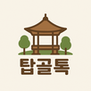

어서오세요, 탑골톡입니다!
탑골톡
🎵 음악 켜기/끄기
☀️ 오늘은 맑고 따뜻한 날씨입니다 (25°C) | 📅 2025년 7월 25일 금요일
🔗 바로가기 메뉴
💊 오늘의 건강정보
🌤️ 내일 날씨
📺 주요 뉴스
🎵 추억의 음악
💬
어르신 소식통
이웃 어르신들과 안부를 나누고
소식을 전해보세요
🏥
건강 이야기
건강 관리 정보와
간단한 운동법을 확인하세요
🎭
추억의 무대
옛날 가요와 트로트를 들으며
추억을 되새겨보세요
🔥 인기 게시글
💬 어르신 소식통
2시간 전
우리 동네 단풍이 정말 예쁘네요
오늘 산책 나갔다가 찍은 사진인데 여러분도 보세요...
👍 좋아요 24개
💬 댓글 8개
📢 읽어주기
📢 공원 소식
• 새로운 건강체조 영상이 업데이트 되었습니다
• 이번 주 날씨: 맑고 따뜻한 날씨가 계속됩니다
• 어르신 무료 건강검진 안내 (7월 25일까지)
• 추억의 가요 신청곡을 받습니다
선택한 텍스트 읽기